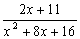

部份分式
注意這個程式不能單獨使用，必須配合內置一元二次方程(I)同時使用。 程式可以將一個分式(分母為二次多項式及分子為一次多項式)分解為二個分母為一次多項式的分式。要注意使用一元二次方程分解分母時，要將答案轉正負號 (例如: 根為 -5，答案變為5，若果根6，答案變為 -6)
程式編寫日期: 2006年5月4日
第一個程式長度 (儲存於P1，當重根時使用這個程式)
注意輸入程式前請先按 1 SHIFT Kin 1確保程式能順利輸入。
程式長度: 9 步
| B 0 | Kin × 4 | C 0 | Kin + 4 | Kout 1 |
| Kin ÷ 2 | Kin ÷ 4 | B | Kout 4 | MODE . |
第二個程式長度 (儲存於P2，當相異根時使用這個程式)
注意輸入程式前請先按 SHIFT KAC 1 SHIFT Kin 1 SHIFT Kin 5 確保程式能順利輸入。
程式長度: 17 步
| Kout 4 | - | Kout 5 | = | Kin × 1 |
| B 0 | Kin × 5 | Kin × 4 | C 0 | Kin + 4 |
| Kin + 5 | Kout 1 | Kin ÷ 4 | Kin ÷ 5 | D |
| Kout 5 | +/- | MODE . |
例題1: 將下列分式化為部份分式。

按 1 FMLA 再按 1 RUN 5 RUN 6 RUN (先輸入分母，根為 - 2，即第一個分式分母為2)
RUN (根為 - 3，即第二個分式分母為 3)
由於二根不相等，執行第二個程式
按 SHIFT P2 5 RUN 11 RUN (顯示第一個分式分子為1) RUN (顯示第二個分式分子為4)
所以

例題2: 將下列分式化為部份分式。

按 1 FMLA 再按 1 RUN 5 RUN 6 RUN (先輸入分母，根為 - 4，即第一個分式分母為4)
RUN (根為 - 4，即第二個分式分母為 4，由於數值相同表示原式分母為完全平方)
重根執行第一個程式
按 P1 2 RUN 11 RUN
RUN (顯示第一個分式分子為2) RUN (顯示第二個分式分子為3)
所以